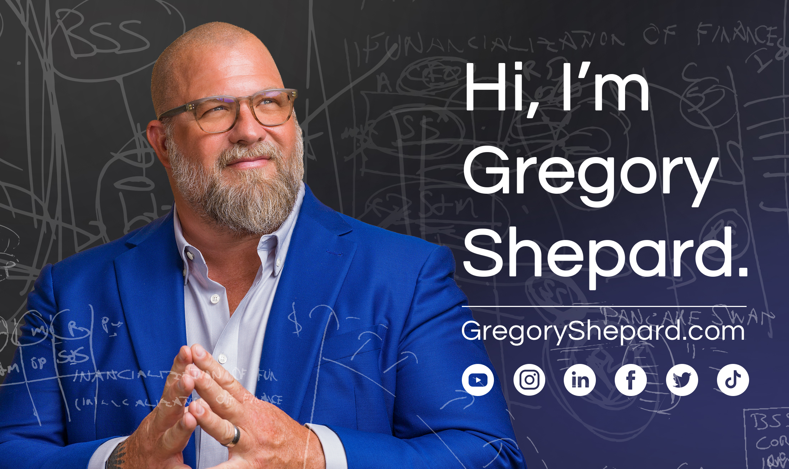

Founder. Author. Speaker. Advisor. 12 tech companies built and sold, 8 more invested in. Now I help founders, investors, and leadership teams build companies that actually last.
I'm a serial entrepreneur, author, speaker, and the founder of Startup Science. I've built and sold 12 tech companies and invested in 8 more, and now I help founders, investors, and leadership teams build businesses that scale.
My work turns startup chaos into structured operating systems: using the Startup Lifecycle framework, stage awareness, and practical decision-making to take a company from idea to exit.
As founder, COO, and operator across multiple industries.
Invited speaker at the United Nations and global stages.
A definitive playbook for building ventures that last.
Helping founders and leadership teams architect what's next.

Living and leading as a neurodivergent thinker, and why it's my advantage.
Learn More →I believe startups don't fail because of bad ideas. They fail because of broken systems.
So I built a different operating system: one grounded in clarity, alignment, and repeatable patterns that help founders build ventures that create lasting impact.
Explore the OSI'm committed to making a difference, through education, mentorship, and supporting causes that create opportunity for others.
Everything on this site feeds the same seven-phase system: see how it applies to what you're building.